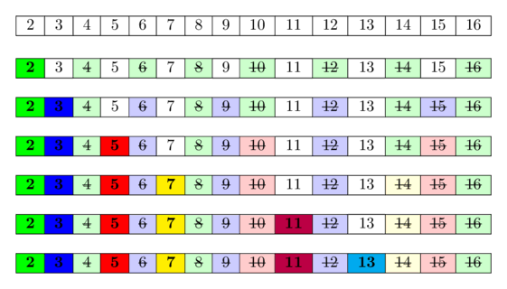
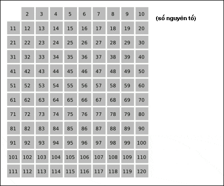
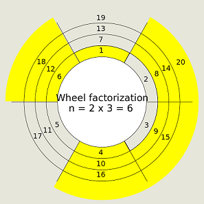
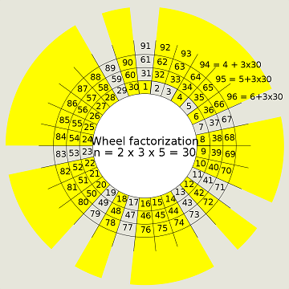
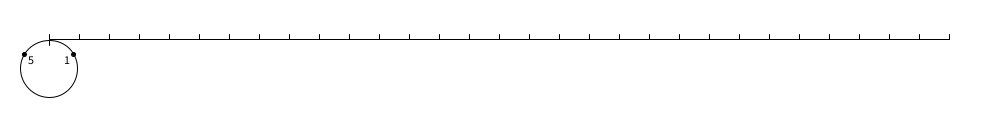
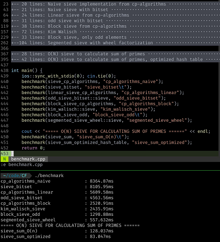

Sàng nguyên tố
Người viết: - Nguyễn Minh Hiển - Trường Đại học Công nghệ, ĐHQGHN
Reviewer: - Nguyễn Đức Kiên - Trường Đại học Công nghệ, ĐHQGHN - Cao Thanh Hậu - Trường Đại học Khoa học Tự nhiên, ĐHQG-HCM - Nguyễn Minh Nhật - Trường THPT chuyên Khoa học Tự nhiên, ĐHQGHN
Khi cần tìm ra các số nguyên tố từ \(1\) đến \(n\), ta có thể duyệt từng số và kiểm tra tính nguyên tố của nó. Và ý tưởng đó cho ta một thuật toán \(\boldsymbol{O\left(n\sqrt n\right)}\).
Tuy nhiên, một nhà toán học cổ Hy Lạp tên là Eratosthenes đã "phát minh" ra một "thuật toán" hiệu quả hơn. Ban đầu, Eratosthenes đã lấy lá cọ và ghi tất cả các số từ \(2\) cho đến \(100\). Sau đó, ông đã chọc thủng các hợp số và giữ nguyên các số nguyên tố. Bảng số nguyên tố còn lại trông rất giống một cái sàng. Cho đến ngày nay, "thuật toán" này được phổ biến rộng rãi với cái tên sàng nguyên tố Eratosthenes.
Sàng nguyên tố Eratosthenes (Sieve of Eratosthenes)¶
Hướng tiếp cận¶
- Ban đầu, ta cho tất cả các số từ \(2\) đến \(n\) vào sàng và đánh dấu tất cả các số. (Các số không được đánh dấu sau cùng sẽ bị loại khỏi sàng).
- Duyệt lần lượt các số từ \(2\) đến \(n\). Nếu số đang xét:
- Đã được đánh dấu \(\Rightarrow\) số nguyên tố: ta bỏ đánh dấu tất cả các bội (khác chính nó) của số nguyên tố này để loại các bội ấy ra khỏi sàng.
- Không được đánh dấu \(\Rightarrow\) hợp số: ta bỏ qua số này.
- Sau khi duyệt xong, các số còn lại trong sàng, hay nói cách khác các số được đánh dấu là số nguyên tố.
Dưới đây là hình minh họa cho thuật toán trên. Nguồn: CP-Algorithm 
Code C++ minh họa¶
const int maxn = 1000000 + 5; //10^6 + 5
bool is_prime[maxn]; // mảng bool khởi tạo với các giá trị false
void sieve(int n){
// Đánh dấu các số từ 2 đến n đều là số nguyên tố
for (int i = 2; i <= n; i++)
is_prime[i] = true;
for (int i = 2; i <= n; i++) {
if (is_prime[i]) {
for (int j = i * 2; j <= n; j += i)
// Bỏ đánh dấu tất cả các số không phải số nguyên tố
is_prime[j] = false;
}
}
}
Độ phức tạp thời gian: \(\boldsymbol{O(n \log \log n)}\)
Độ phức tạp không gian: \(\boldsymbol{O(n)}\)
Nhận xét: Xét \(X = k \cdot p\) là bội của số nguyên tố \(p\). Nếu như \(p < X < p^2\), ta có \(1 < k < p\). Ta suy ra \(k\) phải có một ước nguyên tố nhỏ hơn \(p\). Vì thế, \(X = k \cdot p\) đã bị sàng loại đi trong các vòng lặp trước đó và ta chỉ cần xét \(\boldsymbol{X \ge p^2}\).
Dựa vào Nhận xét trên, ta có cải tiến như sau:
const int maxn = 1000000 + 5; //10^6 + 5
bool is_prime[maxn];
void Eratosthenes(int n){
for (int i = 2; i <= n; i++)
is_prime[i] = true;
for (int i = 2; i * i <= n; i++) {
if (is_prime[i]) {
// j sẽ bắt đầu chạy từ i * i
for (int j = i * i; j <= n; j += i)
is_prime[j] = false;
}
}
}
Lưu ý:
- Trong đoạn code trên, vì \(j\) chạy từ \(i\times i\) đến \(n\), nên \(i\) chỉ chạy từ \(1\) đến \(\sqrt n\). Ngoài ra, ở đây, ta sử dụng điều kiện i * i <= n thay vì sử dụng i <= sqrt(n) bởi hàm sqrt() chạy lâu hơn so với phép nhân số nguyên.
- Nếu vẫn muốn sử dụng hàm sqrt(), ta phải tránh việc phải tính lại sqrt(n) mỗi lần lặp:
int nsqrt = sqrt(n);
for (int i = 2; i <= nsqrt; i++)
Dưới đây là hình minh họa cho cải tiến trên. Nguồn: Wikipedia

Ứng dụng¶
Phân tích thừa số nguyên tố¶
Phân tích số nguyên nhỏ¶
Khi phân tích các số nhỏ \(i \approx 10^6\), thay vì lưu kết quả kiểm tra tính nguyên tố của \(i\) ở mảng is_prime[i], ta có thể sử dụng min_prime[i] lưu ước nguyên tố nhỏ nhất của số i.
const int maxn = 1000000 + 5; //10^6 + 5
int min_prime[maxn];
void sieve(int n){
for (int i = 2; i * i <= n; ++i) {
if (min_prime[i] == 0) { //nếu i là số nguyên tố
for (int j = i * i; j <= n; j += i) {
if (min_prime[j] == 0) {
min_prime[j] = i;
}
}
}
}
for (int i = 2; i <= n; ++i) {
if (min_prime[i] == 0) {
min_prime[i] = i;
}
}
}
vector<int> factorize(int n) {
vector<int> res;
while (n != 1) {
res.push_back(minPrime[n]);
n /= minPrime[n];
}
return res;
}
Tuy nhiên, phương pháp này có độ phức tạp không gian \(\boldsymbol{O(n)}\) và thường sử dụng trong trường hợp cần phân tích nhiều số nguyên ra thừa số nguyên tố.
Đặc biệt, khi phân tích tất cả các số nguyên từ \(1\) đến \(n\), tổng độ phức tạp chỉ còn lại \(\boldsymbol{O(n\log\log n)}\).
Chứng minh tổng độ phức tạp khi phân tích tất cả các số nguyên từ 1 đến n
Xét số nguyên tố $p$ và hàm định giá $p$-adic: $v_p(n)$ là số nguyên lớn nhất thỏa mãn $p^{v_p(n)} | n$. Nói cách khác $v_p(n)$ là số thừa số $p$ nhận được khi phân tích $n$ ra thừa số nguyên tố. Theo định lý Legendre, ta có: $$ v_p\left(n!\right) = \left\lfloor {\dfrac{n}{{{p^1}}}} \right\rfloor + \left\lfloor {\dfrac{n}{{{p^2}}}} \right\rfloor + \left\lfloor {\dfrac{n}{{{p^3}}}} \right\rfloor + \ldots < \dfrac{n}{{{p^1}}} + \dfrac{n}{{{p^2}}} + \dfrac{n}{{{p^3}}} + \ldots = \dfrac{n}{p-1}$$ Như vậy, việc phân tích tất cả các số nguyên từ $1$ đến $n$ cũng như việc phân tích $n!$ cho ta tổng cộng tối đa $$\sum\limits_{p\text{ nguyên tố}} v_p\left(n!\right) < \sum\limits_{p\text{ nguyên tố}} \dfrac{n}{p-1} \sim n\ln \ln n + n + O(1) \text{ thừa số}$$
Phân tích số nguyên lớn hơn¶
Nhận xét: Nếu tất cả các số nguyên trong đoạn \(\left[ 2;\sqrt{n} \right]\) đều không phải là ước của \(n\) thì \(n\) là số nguyên tố.
Dựa vào Nhận xét trên, để phân tích một số nguyên \(n\) lớn (khoảng \(10^9\) hay \(10^{12}\)), ta xây dựng được thuật toán với độ phức tạp \(\boldsymbol{O \left(\sqrt n \right)}\) dưới đây:
vector<long long> factorize(long long n) {
vector<long long> res;
for (long long i = 2; i * i <= n; i++){
while (n % i == 0){
res.push_back(i);
n /= i;
}
}
if (n > 1) res.push_back(n);
return res;
}
Đến đây, ta dễ dàng tìm được một cách cải tiến thuật toán này: ta chỉ cần xét các số nguyên tố trong đoạn \(\left[ 2;\sqrt{n} \right]\). Thật vậy, nếu \(n\) không chia hết cho số nguyên tố \(p\) thì chắc chắn \(n\) sẽ không chia hết cho bội của \(p\).
Trước hết, ta tạo mảng các số nguyên tố trong đoạn \(\left[ 2;\sqrt{n} \right]\). Sau đó, chúng ta làm như sau:
vector<int> primes;
vector<long long> factorize(long long n) {
vector<long long> res;
for (int p : primes){
if (1LL * p * p > n) break;
while (n % p == 0){
res.push_back(p);
n /= p;
}
}
if (n > 1) res.push_back(n);
return res;
}
Phân tích sẽ mất độ phức tạp cho trường hợp xấu nhất là \(\boldsymbol{O \left(\pi \left( \sqrt n \right)\right) \sim O \left( \dfrac{\sqrt n}{\log\log n}\right)}\). Trong đó \(\pi\left( x \right)\) là số số nguyên tố trong đoạn \(\left[ 2;x \right]\). Bạn đọc tham khảo thêm hàm này ở phần Mở rộng của bài viết.
Tìm số nguyên tố trong đoạn [L; R]¶
Đôi khi bạn phải tìm tất cả các số không phải trên đoạn \([1;N]\) mà là trên đoạn \([L;R]\) có kích thước nhỏ nhưng \(R\) lớn. Ví dụ như \(R - L + 1 \approx 1e6\) và \(R \approx 10^{12}\).
Ta đặt \(N = R - L + 1\) là độ dài đoạn \([L;R]\) để tiện theo dõi.
Để làm được điều này, ta sẽ chuẩn bị trước một mảng gồm các số nguyên tố trong đoạn \(\left[ 1;\sqrt R \right]\). Sau đó, dùng các số nguyên tố đó để đánh dấu trong đoạn \([L; R]\).
vector<bool> sieve(long long L, long long R) {
long long sqrtR = sqrt(R);
vector<bool> mark(sqrtR + 1, false);
vector<long long> primes;
// sinh ra các số nguyên tố <= sqrt(R)
for (long long i = 2; i <= sqrtR; ++i) {
if (!mark[i]) {
primes.push_back(i);
for (long long j = i * i; j <= sqrtR; j += i)
mark[j] = true;
}
}
vector<bool> isPrime(R - L + 1, true);
for (long long i : primes)
for (long long j = max(i * i, (L + i - 1) / i * i); j <= R; j += i)
isPrime[j - L] = false;
if (L == 1)
isPrime[0] = false;
return isPrime;
}
Độ phức tạp thời gian: \(\boldsymbol{O \left( N \log \log (R) + \sqrt R \log \log \sqrt R \right)}\)
Độ phức tạp không gian: \(\boldsymbol{O \left( N + \sqrt R \right)}\)
Trong đó: - Tìm các số nguyên tố trong đoạn \(\left[ 1;\sqrt R \right]\) mất \(O \left( \sqrt R \log \log \sqrt R \right)\). - Dùng các số nguyên tố đó để đánh dấu trong đoạn \([L; R]\) mất \(O \left( N \log \log R \right)\).
Ta cũng không cần phải sinh trước các số nguyên tố trong đoạn \(\left[ 1;\sqrt R \right]\):
vector<bool> is_prime;
void sieve(int L, int R){
is_prime.assign(R - L + 1, true);
// x là số nguyên tố khi và chỉ khi is_prime[x - l] == true
for (long long i = 2; i * i <= R; ++i) {
// Lưu ý: (L + i - 1) / i * i là bội nhỏ nhất của i mà >= L
for (long long j = max(i * i, (L + i - 1) / i * i); j <= R; j += i) {
is_prime[j - L] = false;
}
}
if (1 >= L) { // Xét riêng trường hợp số 1
is_prime[1 - L] = false;
}
for (long long x = L; x <= R; ++x) {
if (is_prime[x - L]) {
// x là số nguyên tố
}
}
}
Nguyên nhân là ta dùng tất cả các số nguyên trong đoạn \(\left[ 2;\sqrt R \right]\) đó để đánh dấu trong đoạn \([L; R]\) nên sẽ mất \(O \left( (R - L + 1) \cdot \left(\dfrac{1}{2} + \dfrac{1}{3} + \dfrac{1}{4} + \ldots + \dfrac{1}{\left\lfloor \sqrt R \right\rfloor} \right) \right) = O \left( N \log (R) \right)\).
Một số ví dụ¶
VNOI - Phi hàm Euler Tóm tắt đề: Cho số nguyên dương \(T\) và \(T\) số nguyên dương \(n_i\). Hãy tính phi hàm \(\varphi(n_i)\) của \(T\) số nguyên dương đã cho. \(\(\varphi(n) = p_1^{\alpha_1 - 1}p_2^{\alpha_2 - 1} \ldots p_k^{\alpha_k - 1} (p_1-1)(p_2 - 1) \ldots (p_k - 1)\)\)
Gợi ý
Giả sử khi phân tích ra thừa số nguyên tố, $n = p_1^{\alpha_1}p_2^{\alpha_2} \ldots p_k^{\alpha_k}$ với $\alpha_i > 0$. Khi đó: $$\varphi(n) = p_1^{\alpha_1 - 1}p_2^{\alpha_2 - 1} \ldots p_k^{\alpha_k - 1} (p_1-1)(p_2 - 1) \ldots (p_k - 1)$$
Lời giải
$$
\varphi(n) = p_1^{\alpha_1 - 1} . p_2^{\alpha_2 - 1} \ldots p_k^{\alpha_k - 1} . (p_1-1)(p_2 - 1) \ldots (p_k - 1)
= n \dfrac{p_1-1}{p_1} \dfrac{p_2-1}{p_2} \ldots \dfrac{p_k-1}{p_k}$$
Dựa vào công thức trên, đầu tiên ta sẽ gán f[i] = i. Sau đó, ta chỉ cần duyệt tất cả các số nguyên tố. Với mỗi số nguyên tố p, ta sẽ duyệt các bội j của chúng, rồi nhân f[j] với $\dfrac{p-1}{p}$
## include <bits/stdc++.h>
using namespace std;
const int maxn = 1e6;
int ntest, f[maxn + 5];
int main(){
ios_base::sync_with_stdio(0);
cin.tie(NULL);
for (int i = 1; i <= maxn; i++){
f[i] = i;
}
for (int i = 2; i <= maxn; i++){
if (f[i] == i){
for (int j = i; j <= maxn; j += i){
f[j] = f[j] / i * (i-1);
}
}
}
cin >> ntest;
while (ntest--){
int n;
cin >> n;
cout << f[n] << '\n';
}
}
Một số cải tiến của sàng nguyên tố Eratosthenes¶
Sàng nguyên tố Eratosthenes với ĐPT thời gian \(\boldsymbol{O(n \log \log n)}\) đã khá phù hợp với hầu hết các bài toán lập trình thi đấu. Tuy nhiên điểm yếu chí mạng của nó chính là ĐPT không gian \(\boldsymbol{O(n)}\). Một số cải tiến dưới đây có thể không phù hợp với những bạn mới chỉ biết đến sàng nguyên tố. Các bạn hãy luyện tập với các bài tập luyện tập trước khi đến với các cải tiến bên dưới nha!
So sánh mảng bool và vector¶
- Một biến
boolchỉ có hai giá trịtrue/falsenên về mặt lý thuyết chỉ cần 1 bit để lưu trữ nó. Nhưng bình thường, các máy tính hiện nay khi lưu trữ biếnboolsẽ sử dụng \(1\) byte (tương đương với \(8\) bits) để truy cập nhanh chóng. Vì thế một mảngbool a[n]sẽ cần đến \(n\) bytes. vector<bool>được tối ưu để lưu trữ \(1\) biếnbooltrong \(1\) bit thay vì \(1\) byte, ngoài ra còn có \(40\) bytes sử dụng cho khởi tạovector<bool>ban đầu. Tuy nhiên, việc tối ưu về bộ nhớ khiến ta phải truy cập bit một các gián tiếp: mỗi lần truy cập, đọc, ghi bit ta cần tách nhỏ từng bit của byte đó. Trong trường hợp bộ dữ liệu nhỏ (khoảng \(10^6\)), truy cập như vậy sẽ chậm hơn so với việc truy cập trực tiếp.- Tóm lại, ta có bảng dưới đây
| bool a[n] | vector |
|
|---|---|---|
| Không gian lưu trữ | \(n\) bytes | \(40 + \left\lceil\dfrac{n}{8}\right\rceil\) bytes |
| Truy cập, đọc, ghi bit | Trực tiếp | Gián tiếp |
Chỉ sàng số lẻ¶
Một cải tiến khác cũng có thể được sử dụng đó là chỉ tiến hành kiểm tra với số lẻ (số chẵn chỉ có \(2\) là số nguyên tố). Điều này có thể giảm cả không gian để lưu trữ lẫn số bước tính toán đi một nửa.
Code C++ minh họa¶
vector<bool> is_prime;
void sieve_odd(int n){
is_prime.assign(n / 2 + 1, true);
//is_prime[t] = true nghĩa là 2*t+1 là số nguyên tố
is_prime[0] = false;
for (int t = 1; t * t <= n / 4; t++) {
int i = 2 * t + 1;
if (is_prime[t]){
for (int j = i * i; j <= n; j += i * 2)
is_prime[j / 2] = false;
}
}
}
Độ phức tạp không gian: \(\boldsymbol{O\left(\dfrac{n}{2}\right)}\)
Sử dụng bitset¶
Trong C++, std::bitset là một công cụ hữu hiệu trong việc lưu trữ và xử lý dãy nhị phân.
std::bitset sử dụng cách lưu bit tương tự std::vector<bool> và nhanh hơn std::vector<bool> một chút. Tuy nhiên kích thước MAX của std::bitset<MAX> phải được biết lúc biên dịch.
Code C++ minh họa¶
const int maxn = 1e6;
bitset<maxn + 1> is_prime;
void sieve_bitset(int n){
is_prime.set(); // gán tất cả các bit là true
is_prime[0] = is_prime[1] = 0;
for (int i = 2; i*i <= n; i = is_prime._Find_next(i)) {
if (is_prime[i]) {
for (int j = i*i; j <= n; j += i) {
is_prime[j] = 0;
}
}
}
}
Độ phức tạp không gian: \(\boldsymbol{O\left(\dfrac{n}{32}\right)}\)
Một cách khác, vì biến bool lưu trong bộ nhớ thường là \(1\) byte (\(8\) bits), tuy nhiên thực chất chỉ cần sử dụng \(1\) bit. Vì thế ta có thể sử dụng một biến int để lưu nhiều biến bool. Để code được nhanh chóng, ở đây ta nên sử dụng các phép toán trên bit.
Code C++ minh họa¶
## define doc(n) (prime_bits[n >> 3] & (1 << (n & 7)))
## define set(n) {prime_bits[n >> 3] |= (1 << (n & 7));}
vector<int> prime_bits;
void sieve_bits(int n){
prime_bits.assign((n >> 3) + 5, 0);
set(0); set(1);
for(int i = 2; i * i <= n; i++){
if (!doc(i)){
for(int j = i * i; j <= n; j += i){
set(j);
}
}
}
}
Độ phức tạp không gian: \(\boldsymbol{O\left(\dfrac{n}{8}\right)}\)
Trong code bên trên, int được sử dụng để lưu \(8\) giá trị bool.
Trên thực tế, int/unsigned int chứa \(4\) bytes hay \(32\) bits. Nhờ đó, một số int/unsigned int có thể lưu trữ đến \(32\) giá trị bool. Và bạn đọc có thể thử cách lưu \(32\) giá trị thay vì \(8\) vào code bên trên.
Sàng nguyên tố tuyến tính - Linear Sieve¶
- Sàng nguyên tố này được cải tiến từ Sàng Eratosthenes. Tuy có ĐPT thời gian là \(\boldsymbol{O(n)}\) nhưng với những bộ dữ liệu khoảng \(10^6\) thì không nhanh hơn Sàng Eratosthenes là mấy.
- Sàng \(O(n)\) này có lưu lại các ước nguyên tố nhỏ nhất của các số không vượt quá \(n\) nên sẽ phù hợp cho các bài toán liên quan đến phân tích thừa số nguyên tố.
Hướng tiếp cận¶
Xét \(\text{min_prime}[i]\) là ước nguyên tố nhỏ nhất của \(i\) Mảng \(\text{primes}[]\) sẽ lưu tất cả các số nguyên tố đã tìm được. Duyệt các số từ \(2\) đến \(n\). Ta có \(2\) trường hợp: - \(\text{min_prime}[i] = 0 \Rightarrow i\) là số nguyên tố. Vì thế, ta gán \(\text{min_prime} [i] = i\) và thêm \(i\) vào cuối mảng \(\text{primes}[]\). - Ngược lại, \(\text{min_prime}[i] \neq 0\), ta phải tính được \(\text{min_prime} [i]\) trong các vòng lặp trước đó.
Trong cả hai trường hợp, ta đều cần cập nhật giá trị của \(\text{min_prime}[]\) cho các bội của \(i\). Và mục tiêu của ta là gán giá trị \(\text{min_prime}[]\) tối đa một lần cho mỗi số.
Chúng ta có thể làm như sau: Duyệt các số nguyên \(i\) từ \(2\) đến \(n\). Với mỗi số nguyên \(i\), ta sẽ gán \(\text{min_prime} [i * p_j] = p_j\) với \(p_j\) là các số nguyên tố \(\le \text{min_prime} [i]\).
Code C++ minh họa¶
vector<int> min_prime, primes;
void linear_sieve(int n){
min_prime.assign(n + 1, 0);
for (int i = 2; i <= n; ++i) {
if (min_prime[i] == 0) {
min_prime[i] = i;
primes.push_back(i);
}
for (int j = 0; i * primes[j] <= n; ++j) {
min_prime[i * primes[j]] = primes[j];
if (primes[j] == min_prime[i]) {
break;
}
}
}
}
Độ phức tạp không gian: \(\boldsymbol{O(n)}\)
Giải thích về ĐPT của thuật toán
Mỗi số $x$ có duy nhất một cách biểu diễn: $$x = \text{min_prime}[x] \cdot i$$ trong đó $\text{min_prime}[x]$ là ước nguyên tố nhỏ nhất của $x$. Suy ra $i$ không có ước nguyên tố nào nhỏ hơn $\text{min_prime}[x]$, tức là $$\text{min_prime}[x] \le \text{min_prime}[i]$$ Với mỗi $i$, ta duyệt tất cả các số nguyên tố lên đến $\text{min_prime}[i]$ thì sẽ duyệt được các số có dạng đã cho ở trên. Vì có duy nhất một cách biểu diễn $x = \text{min_prime}[x] \cdot i$ nên thuật toán sẽ đi qua mỗi số hợp số đúng một lần để gán các giá trị $\text{min_prime}[]$ tại đó. Hay thuật toán có ĐPT thời gian $O(n)$.
---Sàng phân đoạn - Block Sieve / Segmented Sieve¶
Đây là một trong số những phương pháp hữu hiệu khắc phục điểm yếu về không gian của sàng nguyên tố Eratosthenes.
Xét code sàng Erathosenes sau:
for (int i = 2; i * i <= n; i++) {
if (is_prime[i]) {
// j sẽ bắt đầu chạy từ i * i
for (int j = i * i; j <= n; j += i)
is_prime[j] = false;
}
}
Vì vòng lặp j bắt đầu từ i * i nên ta không cần phải giữ lại toàn bộ mảng is_prime[1...n] trong suốt quá trình sàng. Khi đó:
- Giữ lại các số nguyên tố \(p\) trong đoạn \(\left[1;\sqrt n\right]\): prime[1..sqrt(n)]
- Chia \(\left[1; n\right]\) thành các đoạn con (block) và sàng riêng từng đoạn (block).
Gọi \(S\) là kích thước của mỗi đoạn. Như thế, chúng ta sẽ có \(\left\lceil \dfrac{n}{S} \right\rceil\) đoạn. Đoạn thứ \(k\) \(\left(k = 0 .. \left\lceil \dfrac{n}{S} \right\rceil - 1\right)\) là \(\left[ kS; \min(kS + S - 1, n) \right]\).
Với mỗi đoạn, vòng lặp for (int j = i * i; j <= n; j += i) sẽ thay đổi sao cho j chỉ chạy trong đoạn đang xét.
Code C++ minh họa¶
vector<int> primes;
void segmented_sieve(int n) {
const int S = 10000;
int nsqrt = sqrt(n);
vector<char> is_prime(nsqrt + 2, true);
for (int i = 2; i <= nsqrt; i++) {
if (is_prime[i]) {
primes.push_back(i);
for (int j = i * i; j <= nsqrt; j += i)
is_prime[j] = false;
}
}
int result = 0;
vector<char> block(S);
for (int k = 0; k * S <= n; k++) {
fill(block.begin(), block.end(), true);
int start = k * S;
for (int p : primes) {
// start_idx * p là bội nhỏ nhất của p mà start_idx * p >= start
int start_idx = (start + p - 1) / p;
int j = max(start_idx, p) * p - start;
for (; j < S; j += p)
block[j] = false;
}
if (k == 0)
block[0] = block[1] = false;
for (int i = 0; i < S && start + i <= n; i++) {
if (block[i])
result++;
}
}
cout << result << '\n'; // In ra số số nguyên tố tìm được
}
Độ phức tạp không gian: \(\boldsymbol{O\left(\sqrt{n} + S\right)}\)
Chú ý rằng ta phải chọn \(S\) sao cho cân bằng giữa độ phức tạp không gian và thời gian. Thông thường thì ta hay chọn \(S = \sqrt n\).
Bánh xe phân tích - Wheel Factorization¶
Wheel Factorization là phương pháp cải tiến có thể loại bỏ đi rất nhiều trường hợp trước khi sàng nguyên tố. Thay vì chỉ xét các số lẻ, ta có thể loại bỏ các số là bội của \(2, 3, 5, 7, \ldots\) Việc này có thể giúp chúng ta giảm đi ĐPT cả thời gian lẫn không gian đi một chút.

Ví dụ khi chọn \(n = 2\cdot 3 = 6\) sẽ chỉ loại đi các số là bội của \(2\) hoặc \(3\). Bản chất của bánh xe khi này là chỉ giữ lại các số \(2, 3\) và các số có dạng \(6k+1\) hoặc \(6k+5\).

Hoặc ví dụ khi chọn loại bỏ các bội của \(2\) hoặc \(3\) hoặc \(5\), ta chọn \(n = 2 \cdot 3 \cdot 5 = 30\)
Bản chất là ta chỉ giữ lại các số \(2, 3, 5\) và các số có dạng \(30k+i\) với \(i <30\) và \(i\) không chia hết cho \(2,3,5\).
\(\left(i \in \{1, 7, 11, 13, 17, 19, 23, 29 \}\right)\)
Trong trường hợp này, ta chỉ cần sử dụng mảng kiểm tra nguyên tố is_prime cho các số có dạng trên.
Lý do người ta dùng bánh xe thì bạn đọc có thể xem ảnh dưới đây. Nguồn: Wikipedia

Code C++ minh họa¶
// Các thông số của bánh xe
// Bội của các số nguyên tố bé
const int wheel_size = 2 * 3 * 5;
const int num_offsets = 8;
// Tập các số dư
const int wheel_offsets[] = {1, 7, 11, 13, 17, 19, 23, 29};
// Thứ tự của 1 số trong offsets
int num_in_offsets[wheel_size];
vector<bool> is_prime;
// vị trí trong mảng is_prime
int pos(const int &v){
return v / wheel_size * num_offsets + num_in_offsets[v % wheel_size] - 1;
}
void sieve_with_wheel(int n){
for (int i = 0; i < num_offsets; i++)
num_in_offsets[wheel_offsets[i]] = i + 1;
is_prime.assign(pos(n) + num_offsets + 10, true);
is_prime[0] = false; // 1 không là số nguyên tố
// Sàng
for (int i = 0; i * i <= n; i += wheel_size) {
for (int j = 0; j < num_offsets; ++j) {
int u = i + wheel_offsets[j];
if (is_prime[pos(u)]) {
for (int v = u * u; v <= n; v += u) {
if (num_in_offsets[v % wheel_size]) {
is_prime[pos(v)] = false;
}
}
}
}
}
// vòng lặp sau sẽ duyệt tất cả các số nguyên tố lớn hơn 5
for (int i = 0; i <= n; i += wheel_size) {
for (int j = 0; j < num_offsets; ++j) {
int u = i + wheel_offsets[j];
if (u <= n && is_prime[pos(u)]) {
// u là một số nguyên tố
}
}
}
}
Độ phức tạp không gian: \(\boldsymbol{O\left(\dfrac{4}{15} n \right)}\)
Xét kích thước "bánh xe" là \(mod = 2 \cdot 3 \cdot 5 \ldots\) có thể chọn \(mod\) vào khoảng \(\sqrt n\) thì ĐPT sẽ còn là \(O\left( \dfrac{n}{\log \log n} \right)\). Nhìn thì ĐPT thấp hơn sàng Eratosthenes thông thường, nhưng vì phương pháp trên mỗi vòng lặp đều sử dụng phép nhân/chia nên thời gian chạy có thể chậm hơn nhiều so với sàng Eratosthenes thông thường với bộ dữ liệu nhỏ \(\left(n \le 10^6 \right)\).
Và vì lý do bộ nhớ cache mà người ta chỉ thường chọn modulo \(mod \in 30; 210\). Các số lọc được tiếp tục kiểm tra bằng cách khác như bên trên.
Kết hợp các cải tiến¶
Bên trên là một số cách cải tiến thường được sử dụng. Tuy nhiên bạn có thể kết hợp các cải tiến một cách hợp lý để tạo ra một sàng nguyên tố mạnh mẽ.
Dưới đây là một số sàng được sưu tầm bởi Code cùng RR.
Sàng phân đoạn và Chỉ sàng số lẻ
// Source: RR Code
const int maxn = 1e6;
void block_sieve_odd() {
long long sum_primes = 2;
const int S = round(sqrt(maxn));
vector<char> sieve(S + 1, true);
vector<array<int, 2>> cp;
for (int i = 3; i < S; i += 2) {
if (!sieve[i])
continue;
cp.push_back({i, (i * i - 1) / 2});
for (int j = i * i; j <= S; j += 2 * i)
sieve[j] = false;
}
vector<char> block(S);
int high = (MAX - 1) / 2;
for (int low = 0; low <= high; low += S) {
fill(block.begin(), block.end(), true);
for (auto &i : cp) {
int p = i[0], idx = i[1];
for (; idx < S; idx += p)
block[idx] = false;
i[1] = idx - S;
}
if (low == 0)
block[0] = false;
for (int i = 0; i < S && low + i <= high; i++)
if (block[i])
sum_primes += (low + i) * 2 + 1;
};
}
Sàng phân đoạn và Bánh xe phân tích
// Source: RR Code
const int WHEEL = 3 * 5 * 7 * 11 * 13;
const int N_SMALL_PRIMES = 6536; // cnt primes less than 2^16
const int SIEVE_SPAN = WHEEL * 64; // one iteration of segmented sieve
const int SIEVE_SIZE = SIEVE_SPAN / 128 + 1;
uint64_t ONES[64]; // ONES[i] = 1<<i
int small_primes[N_SMALL_PRIMES]; // primes less than 2^16
// each element of sieve is a 64-bit bitmask.
// Each bit (0/1) stores whether the corresponding element is a prime number.
// We only need to store odd numbers
// -> 1st bitmask stores 3, 5, 7, 9, ...
uint64_t si[SIEVE_SIZE];
// for each 'wheel', we store the sieve pattern (i.e. what numbers cannot
// be primes)
uint64_t pattern[WHEEL];
inline void mark(uint64_t* s, int o) { s[o >> 6] |= ONES[o & 63]; }
inline int test(uint64_t* s, int o) { return (s[o >> 6] & ONES[o & 63]) == 0; }
// update_sieve
void update_sieve(int offset) {
// copy each wheel pattern to sieve
for (int i = 0, k; i < SIEVE_SIZE; i += k) {
k = std::min(WHEEL, SIEVE_SIZE - i);
memcpy(si + i, pattern, sizeof(*pattern) * k);
}
// Correctly mark 1, 3, 5, 7, 11, 13 as not prime / primes
if (offset == 0) {
si[0] |= ONES[0];
si[0] &= ~(ONES[1] | ONES[2] | ONES[3] | ONES[5] | ONES[6]);
}
// sieve for primes >= 17 (stored in `small_primes`)
for (int i = 0; i < N_SMALL_PRIMES; ++i) {
int j = small_primes[i] * small_primes[i];
if (j > offset + SIEVE_SPAN - 1) break;
if (j > offset) j = (j - offset) >> 1;
else {
j = small_primes[i] - offset % small_primes[i];
if ((j & 1) == 0) j += small_primes[i];
j >>= 1;
}
while (j < SIEVE_SPAN / 2) {
mark(si, j);
j += small_primes[i];
}
}
}
void sieve() {
// init small primes {{{
for (int i = 0; i < 64; ++i) ONES[i] = 1ULL << i;
// sieve to find small primes
for (int i = 3; i < 256; i += 2) {
if (test(si, i >> 1)) {
for (int j = i*i / 2; j < 32768; j += i) mark(si, j);
}
}
// store primes >= 17 in `small_primes` (we will sieve differently
// for primes 2, 3, 5, 7, 11, 13)
{
int m = 0;
for (int i = 8; i < 32768; ++i) {
if (test(si, i)) small_primes[m++] = i*2 + 1;
}
assert(m == N_SMALL_PRIMES);
}
// }}}
// For primes 3, 5, 7, 11, 13: we initialize wheel pattern..
for (int i = 1; i < WHEEL * 64; i += 3) mark(pattern, i);
for (int i = 2; i < WHEEL * 64; i += 5) mark(pattern, i);
for (int i = 3; i < WHEEL * 64; i += 7) mark(pattern, i);
for (int i = 5; i < WHEEL * 64; i += 11) mark(pattern, i);
for (int i = 6; i < WHEEL * 64; i += 13) mark(pattern, i);
// Segmented sieve
long long sum_primes = 2;
for (int offset = 0; offset < MAX; offset += SIEVE_SPAN) {
update_sieve(offset);
for (uint32_t j = 0; j < SIEVE_SIZE; j++){
uint64_t x = ~si[j];
while (x){
uint32_t p = offset + (j << 7) + (__builtin_ctzll(x) << 1) + 1;
if (p > offset + SIEVE_SPAN - 1) break;
if (p <= MAX) {
sum_primes += p;
}
x ^= (-x & x);
}
}
}
assert(sum_primes == SUM_PRIMES);
}
Cải tiến của Kim Walisch
Xem code gốc tại đây. Sàng nguyên tố của Kim Walisch sử dụng kết hợp rất nhiều phương pháp nhằm tối ưu hóa sàng nguyên tố từ nhưng trường hợp nhỏ đến những trường hợp lớn. Tham khảo các tối ưu hóa được sử dụng tại đây. Dưới đây là một phần code được tối giản cho trường hợp $n$ lớn và phù hợp hơn với lập trình thi đấu.
// Source: RR Code
const int lim = 1e9;
typedef unsigned char byte;
int count = 0;
void sieve()
{
long long sum_primes = 0;
int sqrt = std::sqrt(lim);
int sieve_size = max(sqrt, (1 << 15));
int segment_size = sieve_size * 16;
vector<byte> mark(sieve_size);
vector<byte> is_prime(sqrt + 1, true);
vector<int> seg_prime;
vector<int> seg_multi;
for (int i = 3; i <= sqrt; i += 2)
if (is_prime[i])
for (int j = i * i; j <= sqrt; j += i)
is_prime[j] = false;
int reset[16];
for (int i = 0; i < 8; ++i)
reset[2 * i] = reset[2 * i + 1] = ~(1 << i);
int s = 3;
for (int low = 0; low <= lim; low += segment_size)
{
fill(mark.begin(), mark.end(), 0xff);
int high = min(low + segment_size - 1, lim);
sieve_size = (high - low) / 16 + 1;
for (; s * s <= high; s += 2)
{
if (is_prime[s])
{
seg_prime.push_back(s);
seg_multi.push_back(s * s - low);
}
}
for (size_t i = 0; i < seg_prime.size(); ++i)
{
int j = seg_multi[i];
for (int k = seg_prime[i] * 2; j < segment_size; j += k)
mark[j >> 4] &= reset[j % 16];
seg_multi[i] = j - segment_size;
}
if (high == lim)
{
int bits = 0xff << ((lim % 16) + 1) / 2;
mark[sieve_size - 1] &= ~bits;
}
for (int n = 0; n < sieve_size; n++)
{
for (int i = 0; i < 8; i++)
if (mark[n] & (1 << i))
{
auto p = low + n * 16 + i * 2 + 1;
sum_primes += (p > 1) ? p : 2;
}
}
}
}
So sánh độ dài code và thời gian chạy với \(n = 10^9\) của một số sàng nguyên tố (Nguồn: Code cùng RR)

Một số sàng nguyên tố khác¶
Ngoài Sàng Eratosthenes, còn có một số sàng nguyên tố khác như: - Sàng nguyên tố Atkin với ĐPT \(O(n)\) - Sàng nguyên tố Sundaram với ĐPT \(O(n\log n)\) - Sàng Pritchard với ĐPT \(O\left( \dfrac{n}{\log \log n} \right)\) - ... Tuy nhiên, khi gặp các bộ dữ liệu \(n\) vào khoảng \(10^6\) thì các sàng này hầu như chạy chậm hơn so với Sàng Eratosthenes thông thường.
Mở rộng¶
- Sử dụng cách sàng như sàng nguyên tố chúng ta có thể xây dựng các sàng cho các số có tính chất đặc biệt khác, ví dụ như lưu ước chính phương lớn nhất, thay các số nguyên tố thành các số phân biệt có tính chất nào đó ... Ví dụ như VNOI - Duyên Hải 2020 - Lớp 10 - Bài 2
- Hàm \(\boldsymbol{\pi(x)}\) là hàm đếm số số nguyên tố không vượt quá số dương \(x\). Và theo định lý số nguyên tố (Prime Number Theorem), ta có một công thức để ước lượng: \(\(\boldsymbol{\pi(x) \sim \dfrac{x}{\ln x}}\)\) Công thức này có thể hữu ích trong việc ước chừng các độ phức tạp liên quan đến số nguyên tố.
- Khi tính số lượng các số nguyên tố hay tổng các số nguyên tố không vượt quá \(n\), việc sử dụng Sàng nguyên tố là một phương pháp nhanh dễ hiểu. Tuy nhiên, với những bộ dữ liệu lớn, người ta thường sử dụng sử dụng thuật toán Meissel–Lehmer hay thuật toán Lucy Hedgehog, có thể chạy với \(n\) lên đến \(10^{12}\) trong 1s. Xem code bằng C++ tại thuật toán Lehmer - đếm số lượng số nguyên tố và thuật toán Lucy Hedgehog - tính tổng các số nguyên tố.
- Để phân tích thừa số nguyên tố thì có hai sàng tốt hơn sàng nguyên tố: Quadratic Sieve và General number field sieve
- Ngoài ra có thể tham khảo thêm các code sàng nguyên tố được sưu tầm bởi Code cùng RR tại đây.
Bài tập luyện tập¶
Sàng nguyên tố cơ bản¶
- VNOI - Free Contest 75 - FPRIME
- VNOI - Free Contest 102 - PRIME
- VNOI - Bedao Grand Contest 01 - KPRIME
- VNOI - Bedao Regular Contest 03 - PRIME
- VNOI - Tìm số nguyên tố
- VNOI - Số nguyên tố!
- VNOI - Vòng số nguyên tố
- VNOI - Bedao Regular Contest 02 - PXOR
- VNOI - VM 08 Bài 04 - Xóa số
- VNOI - Euler
- NTUCoder - Phi Euler
- NTUCoder - Phi Euler 2
- VNOI - COCI 2016/2017 - Contest 6 - Savrsen
- NTUCoder - Sum gcd
- VNOI - Sum of Primes
- Codechef - Chef and Divisor Tree
- SPOJ - A conjecture of Paul Erdős
- SPOJ - Primal Fear
- SPOJ - Primes Triangle
- Codeforces - Almost Prime
- Codeforces - Sherlock And His Girlfriend
- SPOJ - Namit in Trouble
- SPOJ - Bazinga!
- Hackerrank - Project Euler - Prime pair connection
- SPOJ - N-Factorful
- SPOJ - Binary Sequence of Prime Numbers
- UVA 11353 - A Different Kind of Sorting
- SPOJ - Prime Generator
- Codeforces - Nodbach Problem
- Codefoces - Colliders
Sàng nguyên tố cải tiến. Thuật toán Meissel-Lehmer¶
- VNOI - Prime Number Theorem
- SPOJ - Primes2
- SPOJ - KPrimes2
- SPOJ - BSPRIME
- ICPC 2022 vòng Quốc gia - C: Consecutive Primes
- VOI 22 Bài 6 - Xây dựng ma trận
Nguồn tham khảo¶
Bài viết được tổng hợp từ các nguồn dưới đây: * CP - Algorithms: - Sieve of Eratosthenes - Linear Sieve * Bài viết của Code cùng RR * Bài viết 2 của Code cùng RR * Wikipedia